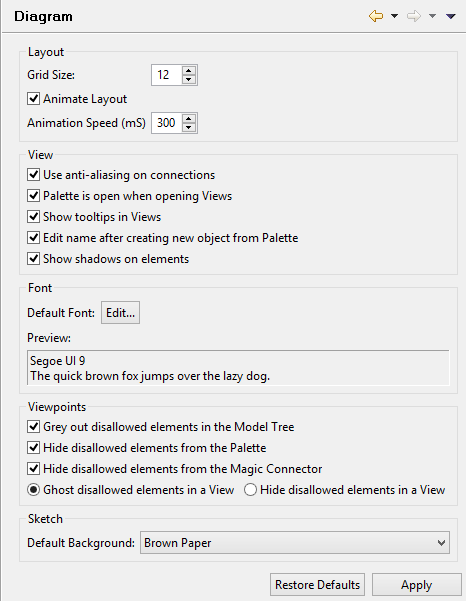

Diagram Preferences
Grid Size
Sets the grid spacing used in diagram Views.
Animate Layout
Sets whether animation is used in diagram Views for some Undo/Redo commands and when changing the View's Connection Router.
Animation Speed (mS)
Sets the animation speed in milliseconds.
Use anti-aliasing on connections
On Windows and Linux operating systems ensures that connections are drawn more smoothly.
Palette is open when opening Views
If enabled, the palette in a View will be open when the View is opened.
Show tooltips in Views
If enabled tooltips in Views will be shown.
Default Font
Sets the default font to use for text in elements and connections.
Preview
Previews the selected default font.
Grey out disallowed elements in the Model Tree
When this option is set any elements that are disallowed in a Viewpoint are greyed out. For more information see Viewpoints.
Hide disallowed elements from the Palette
When this option is set any elements that are disallowed in a Viewpoint are not shown in the Palette. For more information see Viewpoints.
Hide disallowed elements from the Magic Connector
When this option is set any elements that are disallowed in a Viewpoint are not shown in the Magic Connector. For more information see Viewpoints.
Ghost disallowed elements in a View / Hide disallowed elements in a View
Toggling these options either ghosts or hides disallowed elements in a Viewpoint. For more information see Viewpoints.
Show Background
Show or hide the background in the Sketch View.